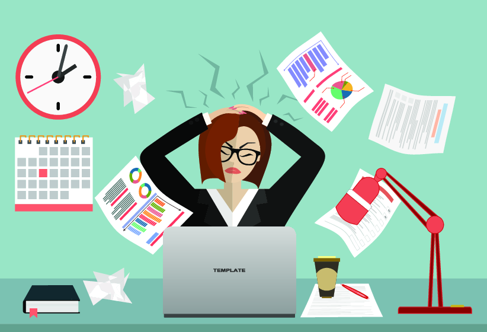
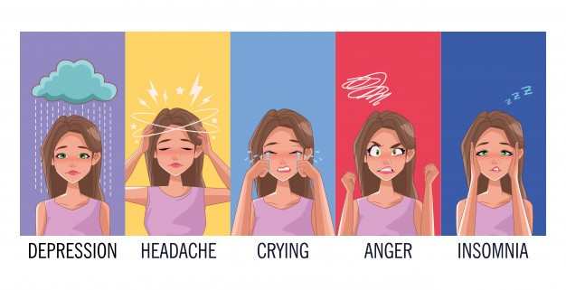

El estrés es un estado de tensión física y emocional originado como reacción a una estímulo o presión, ya sea positivo o negativo.Se trata de un estado de defensa que, en pequeńas dosis, ayuda al organismo a reaccionar y adaptarse a los acontecimientos.
Un nivel de estrés normal se considera sano e incluso positivo ya que ayuda a estimular a las personas para actuar ante los estímulos de la vida diaria. Sin embargo, cuando el estrés es excesivo o no se controla adecuadamente puede producir problemas de desgaste mental, como irritabilidad y ansiedad, o trastornos psicosomóticos.
Un trastorno psicosomático es una enfermedad fisiológica originada por causas emocionales, generalmente por el estrés. Algunos de los trastornos psicosomáticos más frecuentes provocados por el estrés son dolores de cabeza, insomnio, tensión muscular, problemas digestivos y cardíacos, mareos…
Según su causa, encontramos diferentes tipos de estrés, como el estrés laboral o el estrés postraumático.

Sintomas El estrés puede causar diversos y distintos síntomas, tanto psicológicos como físicos. Los más habituales son:
- Dolor de cabeza.
- Mala memoria.
- Diarrea.
- Cambios de conducta e irritabilidad.
- Ansiedad.
- Problemas cardiovasculares, en casos en los que el estrés se prolonga mucho en el tiempo.
- Insomnio.
- Envejecimiento.
- Cansancio prolongado.

Causas del estrés Las situaciones y presiones que causan estrés son conocidas como estresores. Normalmente pensamos en los estresores como en algo negativo, como un horario laboral exhaustivo o una relaci&oaute;n pesada. Sin embargo, cualquier cosa que suponga demandas altas o forzar a ajustar tu vida normal puede ser estresante. Esto incluye los eventos positivos como el casarse, comprar una nueva casa, ir a la universidad o recibir un ascenso.
No obstante, no todo el estrés es causado por factores externos. El estrés también puede ser auto-generado. Por ejemplo, cuando te preocupas excesivamente sobre algo que puede o no que suceda, o el tener pensamientos irracionales y pesimistas sobre tu vida.
Causas comunes de estrés externo
- Cambios grandes en la vida.
- Trabajo o escuela.
- Dificultades en las relaciones.
- Problemas financieros.
- Estar demasiado ocupado.
- Niños y familia.
Causas comunes de estrés interno
- Preocupación crónica
- Pesimismo
- Autodiscurso negativo
- Expectativas surrealistas/ Perfeccionismo
- Pensamiento rígido, falta de flexibilidad
- Actitud de todo o nada
Las causas del estrés excesivo dependen, al menos en parte, de la percepción de cada uno. Algo que puede ser estresante para ti, puede que no lo sea para otro; incluso que disfrute con ello. Por ejemplo, tu viaje matinal puede ser para ti ansioso y tenso, porque te preocupa el tráfico que pueda haber y que llegues tarde. Otros, sin embargo, encontrarán ese viaje relajante porque les permite disfrutar de diferentes canciones mientras van conduciendo.
Maneras de combatir el estrés A la hora de afrontar el estrés, el consejo más importante que se puede ofrecer es el de saber parar para relajarse, reflexionar sobre las causas de esa situación de estrés y serenarse para tomar decisiones o cambiar actitudes que permitan reducir el impacto del estrés.
En definitiva, se trata de aprender a crear una especie de burbuja en la que alejarse por unos momentos de la actividad o la situación que produce el estado de estrés. Y hay muchas maneras de poder hacerlo:
- Disfrutar de las cosas y los momentos buenos que ofrece la vida: salir con los amigos, dar un paseo, un viaje de fin de semana, ir al cine o al teatro… Son muchas las actividades que permiten romper con la situación de estrés y, por tanto, alejarse de él.
- Disfrutar de las cosas y los momentos buenos que ofrece la vida: salir con los amigos, dar un paseo, un viaje de fin de semana, ir al cine o al teatro… Son muchas las actividades que permiten romper con la situación deestrés y, por tanto, alejarse de él.
- Hacer ejercicio físico: la actividad física ayuda a liberar la tensión y a quemar la energía generada por el aumento de adrenalina, noradrenalina y cortisol que se genera con el estrés. Al finalizar, se obtendrá un estado de relajamiento que alejará las preocupaciones.
- Evitar las bebidas excitantes: elevan la tensión nerviosa y por tanto el estrés.
- Un bańo caliente: permite relajarse y ayuda a eliminar la tensión muscular.
- Evitar aislarse: cuando se está sólo se tiende a seguir analizando los detalles de la situación que produce el estrés, lo que no hace sino aumentarlo.
- Cambiar las rutinas: en momentos de estrés lo mejor es cambiar las rutinas habituales y ayudan a desconectar, como se dice coloquialmente.
- Delegar: esto es importante especialmente cuando las situaciones de estrés se producen en el ámbito de trabajo. Hay que aprender a trabajar en equipo y a delegar en otros compañeros. No se puede controlar absolutamente todo o asumir sólo toda la carga de trabajo. Una buena organización es también indispensable.
- Reir: la risa es una excelente terapia frente al estrés.
- Establecer prioridades: hay que aprender a priorizar, relegando al último lugar aquellas cosas que estresan, toda vez que se han identificado como “tóxicas”.
- Descansar suficientemente: el sueńo siempre es reparador cuando una persona se enfrenta a una situación de estrés, por lo que es necesario mantener una adecuada higiene del sueńo, cenando una hora antes de irse a dormir, manteniendo las condiciones de oscuridad y temperatura adecuadas en la habitación y no realizando ninguna otra actividad en la cama, como leer o ver la televisión.
Se podría seguir enumerando actitudes, actividades o medidas que ayuden a afrontar y reducir el estrés. Pueden ser innumerables. Lo más importante, en todo caso, es no permitir que sea el estrés el que marque la pauta en la propia vida.
Para más información pulsa aqui